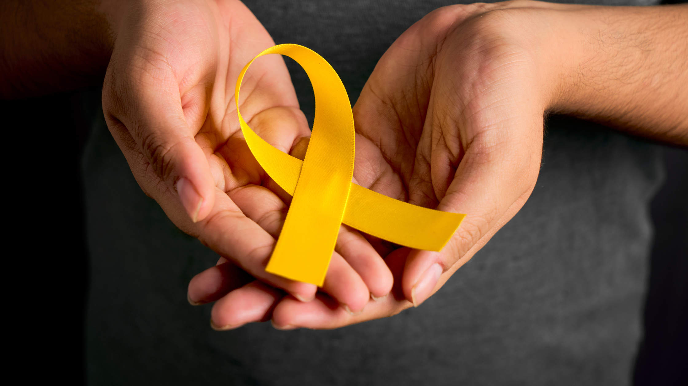

Setembro Amarelo é uma campanha de conscientização e prevenção ao suicídio. A iniciativa começou no Brasil em 2015, inspirada pelo Dia Mundial de Prevenção ao Suicídio, que é 10 de setembro. Durante todo o mês, o objetivo é iluminar a conversa sobre a saúde mental e quebrar o tabu em torno do suicídio.
A campanha destaca a importância de:
Falar sobre o assunto: Muitas pessoas que enfrentam pensamentos suicidas se sentem isoladas. Falar abertamente sobre o tema pode ajudar a quebrar o silêncio e mostrar a elas que a ajuda está disponível.
Reconhecer os sinais: Aprender a identificar os sinais de alerta em si mesmo ou em outras pessoas, como mudanças de comportamento, isolamento, desesperança e falta de interesse em atividades que antes gostava.
Oferecer e buscar ajuda: O Setembro Amarelo reforça que buscar ajuda profissional, como psicólogos e psiquiatras, é um ato de coragem e uma das principais formas de prevenção. A campanha também incentiva as pessoas a serem ouvintes atenciosos para amigos e familiares, e a oferecer apoio sem julgamentos.
